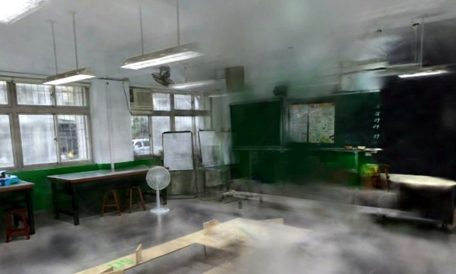
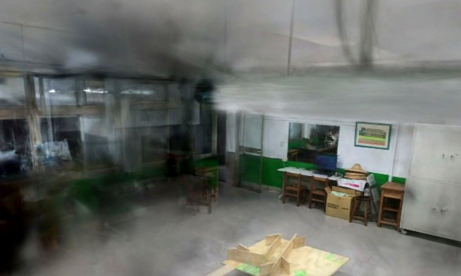
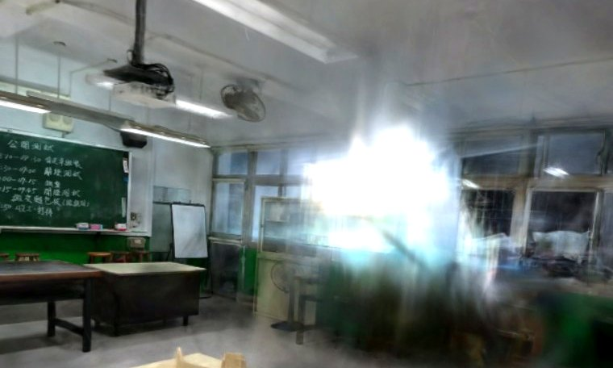
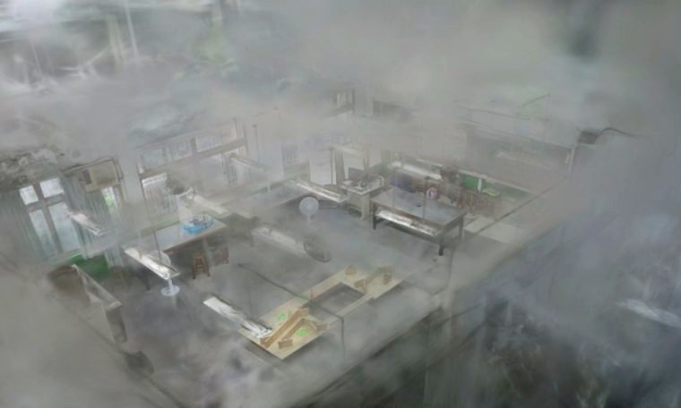

沉浸瀏覽
📖 技術說明與學習資源 — 3D 高斯潑濺（3DGS）
原理：把空間表示成數百萬顆「各向異性高斯球」（位置、形狀、顏色、不透明度），用可微分光柵化在多視角照片上最佳化，達到照片級且可即時渲染的輻射場。本站用 Brush 訓練、SOG 壓縮、PlayCanvas/SuperSplat 在瀏覽器即時繪製。相較 NeRF，3DGS 渲染快上百倍、適合 Web。

第一人稱行走
WASD / 觸控搖桿走動，牆與家具有物理碰撞，雙層垂直感知，支援 VR。
推薦入口進入 →家政教室・8K 高畫質（新）
FlowState 8K 縫合重建，837/840 視角註冊、1600 解析度訓練、164 萬高斯。黑板字跡、不鏽鋼桌、櫥櫃機具明顯更銳利，霧大幅減少。滑鼠軌道環視。
最新・最佳畫質進入 →家政教室 8K・第一人稱行走
LiDAR 公尺校尺版：用 iPhone RTAB-Map 公尺點雲對齊 8K 場景（Sim3 尺度 0.92、重力對齊），WASD/觸控走動、桌椅雙層碰撞、真實尺度與眼睛高度。
新・公尺尺度+碰撞進入 →家政教室・深度正則去霧版（新）
1600px + bilateral grid 雲端重訓：gsplat 深度正則把高斯壓回表面去飄絲、保球諧 SH，PSNR 18→22、感知清晰度約 2×。室內環視（拖曳看、滾輪前進、放手自動繞）。過程與前後對比見實驗紀錄。
新・深度正則去霧進入 →物理 × 3DGS 雛形（新）
CG 物理球丟進去霧 3DGS 教室：真實重力，地板/牆面彈跳邊界由 COLMAP 點雲擬合。對應技術報告「靜態輻射場＋動態網格」概念的最小可行版。點畫面投球。
實驗・物理×輻射場進入 →3DGS × 4DGS 探索與實作紀錄（持續更新）
把一份 3DGS/4DGS 技術綜述報告對照我們親手實測的結果：哪些已驗證、哪些待查、哪些偏樂觀，加上動手做的雛形與踩坑。含「報告 vs 實測」對照表與更新日誌。
研究・發展脈絡進入 →家政教室・光線世界模型
房間幾何 × 天文太陽位置 × 日光物理，模擬任一時刻應有的自然光。用 3 天現成錄影校準出窗戶朝向 ≈ 東(88°)；含三方比對（天文×天氣×攝影機）與物理照度熱圖。
世界模型·資料校準開啟 →家政教室・3DGS 光線時光機
在真實家政 3DGS 場景上拉時間改天色光線：太陽位置即時改背景天色＋畫面亮度/色溫/暖暈，可選日期、天氣、窗向（預設 88° 東），重現一日採光。
物理日照·即時調色開啟 →
家政教室・清晰瀏覽
家政教室 9.0×11.0m≈99m²。354 視角訓練、清理後的乾淨版本，黑板字跡可讀、櫥櫃機台清晰。滑鼠軌道環視。滑鼠軌道環視。
畫質優先進入 →
家政教室・廣域瀏覽
696 視角全覆蓋版，含更多角落與設備。比較資料量的影響。
覆蓋優先進入 →生活科技教室4（工坊）
工坊 6.5×9.9m≈64m²，兩段 360 影片合併重建。去霧版：去人→Brush→離群清理去飄絲（保留天花板與表面銳利），成排工作桌與機具清晰。
去霧版・107萬高斯進入 →工坊・第一人稱行走
走進工坊：WASD/觸控搖桿走動、雙層碰撞(桌擋身、走道可穿)。去霧版：統計離群清理去飄絲，保留天花板與表面銳利，機具與工作檯清晰實體。
去霧優化・可走動進入 →工坊・第一人稱行走（LiDAR 公尺校尺）
以 RTAB-Map 公尺 LiDAR 雲做 Sim3 對齊校尺＋重力定向（scale 1.225），走動距離為真實公尺；雙層佔據碰撞由 LiDAR 校正後的高斯密度產生，可走 85%、空間開闊好穿行。
LiDAR 公尺校尺・可走動進入 →工坊・電影級運鏡（去霧版）
自動繞行運鏡，照片級環視整間工坊 3DGS（升降＋半徑脈動）。改載夾針去霧模型：消飄絲不留洞、近景銳利。內建「錄製一圈」一鍵輸出 WebM，免裝軟體、適合簡報（原始版：無參數網址）。
去霧・自動運鏡・可錄影進入 →Blender × GS
把 LiDAR 公尺級 3DGS 接進 Blender：物理級日照（真實太陽角度＋投射陰影）、電影級運鏡、真高斯匯入管線（splat-transform＋KIRI）實測與限制。
Blender×GS・物理日照開啟 →工坊・人流熱區分析
天花板 360 環景相機 58 段全時段（5/20–5/25）· 9,618 筆真實偵測，直接疊回環景影像（零投影失真）並由影像判讀分區：前方教學/示範區占 45%。含方位玫瑰圖、各區占比與校準頂視圖。新增：360 活動已逐塊對位進 3DGS 走路場景。
58段多片·零失真開啟 →工坊・3DGS 光線時光機
在真實工坊 3DGS 場景上拉時間改天色光線：太陽位置物理模型（仰角/方位/直射）即時改背景天色＋畫面亮度/色溫/暖暈，可選日期、天氣、窗向，重現一日採光變化。
物理日照·即時調色開啟 →空間分析
📖 技術說明與學習資源 — SfM 位姿、參考物比例尺、幾何抽取
原理：COLMAP 用 Structure-from-Motion（SfM）從多張照片解出相機位姿與稀疏 3D 點雲，這是 3DGS 訓練的前置。3DGS/SfM 本身是任意尺度，本站用畫面中「已知尺寸的參考物」（天花板日光燈管 T8 4ft=1.22m）反推出公尺比例 k，再用 Open3D 從點雲抽出網格、碰撞殼與佔據格，量距、算面積、出建築平面圖。
建築平面圖 + 人流追蹤
建築製圖風格上視圖，標注牆/窗/門/燈/家具與尺寸；人物即時座標與軌跡記錄。
公尺座標開啟 →尺寸量測化
以天花板日光燈管（4ft=1.22m）標定比例，自動算出空間與家具尺寸。
±10% · 待 LiDAR 精校🔒 私有碰撞 / 幾何
從點雲抽碰撞殼與佔據格，供物理引擎、碰撞偵測、量距使用（無需 CUDA）。
Open3D🔒 私有數位孿生
📖 技術說明與學習資源 — 即時人物偵測、座標映射、化身
原理：固定攝影機畫面經 MediaPipe 即時偵測人物，取「腳底點」經單應變換映到 3DGS 場景的地板座標 (x,z)，再用 WebSocket 把座標串流到瀏覽器，在平面圖上即時定位 —— 即「實體空間↔虛擬模型即時同步」的數位孿生。進階路線：單相機 3D 人體姿態（骨架級化身）、高斯化身（照片級本人）。
即時人流（P1）
教室攝影機 → 人物偵測 → 平面圖上即時定位。連線後真人進場即現點。
● LIVE 待校準開啟 →化身示範動畫
用真實拍攝軌跡與合成路徑，示範化身在 3D 空間巡場、跟拍、多人交會。
展示觀看 →部署手冊
攝影機接入、四點地板校準、隱私與進階（骨架/照片級化身）路線。
文件🔒 私有空間規劃
📖 技術說明與學習資源 — 大範圍 / 多樓層 3DGS
原理：校園級無法塞進單一巨型模型（SfM 配對 O(n²)、記憶體與瀏覽器載入都會爆）。做法是切塊：每房間/走廊一個有界場景，用導航圖相連、串流載入。多樓層靠樓梯間連續拍攝讓 COLMAP 跨層重建求出垂直 transform，再用 iPhone RTAB-Map（LiDAR）給真實公尺尺度堆疊對齊。單一無縫巨模型才需 CUDA 的階層式 3DGS。

校園多樓層導覽
多場景 + 樓層堆疊的容器雛形。新拍房間 append 即現，樓梯間連續拍攝對齊樓層。
雛形開啟 →校園級架構
切塊 + 導航圖 + 樓層對齊的可行性與拍攝指南（先做垂直切片 pilot）。
文件🔒 私有一條龍腳本
縫合後 MP4 → COLMAP → 訓練 → 清理 → 網頁資產 → 碰撞資料，全自動。
自動化🔒 私有